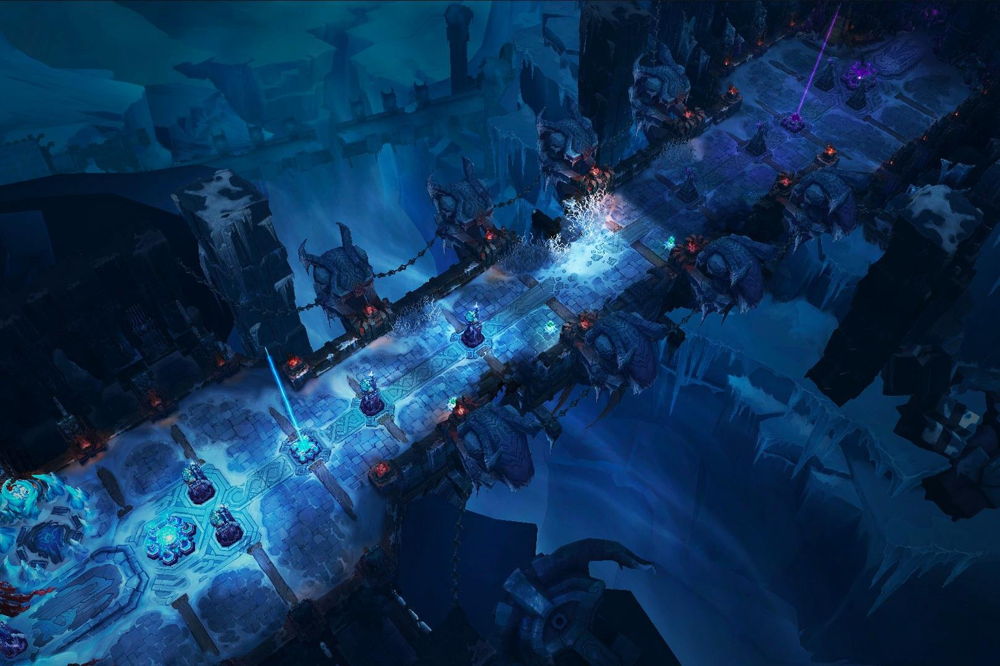

LEAGUE OF LEGENDS
¿QUE ES LEAGUE OF LEGENDS

League of Legends (también conocido por sus siglas LoL), es un videojuego multijugador de arena de batalla en línea desarrollado y publicado por Riot Games. Inspirándose en Defense of the Ancients, un mapa personalizado para Warcraft III, los fundadores de Riot buscaron desarrollar un juego independiente del mismo género. Desde su lanzamiento en octubre de 2009, LoL ha sido un juego gratuito y se monetiza a través de la compra de elementos para la personalización de personajes. El juego está disponible para Microsoft Windows y macOS. En el juego, dos equipos de cinco jugadores luchan en un combate jugador contra jugador, cada equipo ocupando y defendiendo su mitad del mapa. Cada uno de los diez jugadores controla un personaje, conocido como "campeón", con habilidades únicas y diferentes estilos de juego. Durante una partida, los campeones se vuelven más poderosos acumulando puntos de experiencia y ganando oro que se emplea para la compra de artículos para derrotar al equipo contrario. En el modo principal de juego de LoL, League, "La Grieta del Invocador", un equipo gana al abrirse paso hasta la base enemiga y destruir su "nexo", una gran estructura ubicada dentro de la cual se emanan tres líneas de súbditos o "minions", personajes no jugadores que al ser eliminados por el equipo enemigo otorgan oro y experiencia. League of Legends ha recibido críticas generalmente positivas; los críticos destacaron su accesibilidad, diseños de personajes y valor de producción. La larga antigüedad del juego ha resultado en una reevaluación crítica, con reseñas con una tendencia positiva; el comportamiento negativo y abusivo de sus jugadores en el juego, criticado desde su lanzamiento, persiste a pesar de los intentos de Riot por solucionar el problema. En 2019, LoL alcanzó regularmente un máximo de ocho millones de jugadores simultáneos, y su popularidad ha llevado a vinculaciones como videos musicales, cómics, cuentos y hasta una serie animada de Netflix, Arcane. Su éxito también ha generado varios videojuegos derivados, incluida una versión móvil, un juego de cartas coleccionables digital y un juego de rol por turnos, entre otros. Se está desarrollando un juego de rol multijugador masivo en línea basado en LoL. Citado regularmente como el deporte electrónico más grande del mundo, el juego tiene una escena competitiva internacional que consta de 12 ligas. Estas ligas locales culminan en el Campeonato Mundial anual de League of Legends. El evento de 2019 registró más de 100 millones de espectadores únicos, alcanzando un máximo de 44 millones de espectadores simultáneos durante la final. Los eventos nacionales e internacionales se han transmitido en sitios web de transmisión en vivo como Twitch, YouTube, Bilibili y en el canal de deportes de televisión por cable ESPN.
MODOS DE JUEGOS
ARAM
Además de La Grieta del Invocador, League of Legends tiene otros dos modos de juego permanentes. ARAM ("All Random, All Mid" «Todos Aleatorio, Todos al Centro») es un modo de cinco contra cinco como La Grieta del Invocador, pero en un mapa llamado Abismo de los Lamentos, con solo un carril largo, sin área de jungla y con campeones elegidos al azar para los jugadores.222324 Dado el pequeño tamaño del mapa, los jugadores deben estar atentos para evitar las habilidades enemigas.25 Teamfight Tactics es un auto battler lanzado en junio de 2019 y se convirtió en un modo de juego permanente al mes siguiente.2627 Al igual que como otros en su género, los jugadores forman un equipo y luchan para ser el último en pie. Los jugadores no afectan directamente el combate, pero colocan sus unidades en un tablero para que luchen automáticamente contra los oponentes en cada ronda.28 Teamfight Tactics está disponible para iOS y Android y tiene juego multiplataforma con los clientes de Windows y macOS.29 Otros modos de juego se han puesto a disposición temporalmente, generalmente alineados con los eventos del juego.3031 El modo de Fuego Ultra Rápido (Ultra Rapid Fire, URF) estuvo disponible durante dos semanas como una broma del Día de los Inocentes de 2014. En este modo, las habilidades de los campeones no tienen costo de recursos personales, reducen significativamente los tiempos de enfriamiento, aumentan la velocidad de movimiento, reducen la curación y aceleran los ataques. Un año después, en abril de 2015, Riot reveló que no habían recuperado el modo porque su diseño desequilibrado provocó "agotamiento" de los jugadores. El desarrollador también dijo que los costos asociados con el mantenimiento y mantener el balance de URF eran demasiado altos.34 Otros modos temporales incluyen Uno Para Todos (One for All) y Bombardeo al Nexo (Nexus Blitz). Uno Para Todos hace que los jugadores elijan un único campeón para que jueguen todos los miembros de su equipo.3536 En Bombardeo al Nexo, los jugadores participan en una serie de minijuegos en un mapa comprimido.37